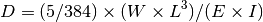
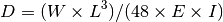
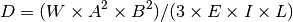
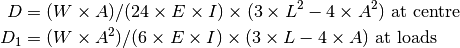
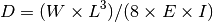
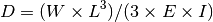
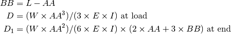
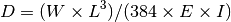
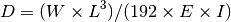
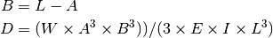

beamdefl – BEAMS, Deflection in¶
This program can be used in two modes.
- Stand-alone.
- The legacy could chained from beamsect, where the cross section AR variable is set.
Legacy Output¶
Introduction:
DEFLECTION in BEAMS by George Murphy VE3ERP
Ref: Machinery's Handbook, 21st Edition
beam of any cross-section:
Select Modulus of Elasticity by pressing letter in < >:
< a > ALLOY STEEL......................( 30Σ6 PSI )
< b > STRUCTURAL STEEL.................( 29Σ6 PSI )
< c > WROUGHT IRON.....................( 28Σ6 PSI )
< d > TYPICAL ALUMINUM EXTRUSION.......( 10.3Σ6 PSI )
< e > WOOD - Fir.......................( 1,76Σ4 PSI )
< f > WOOD - Redwood...................( 1,32Σ4 PSI )
< g > WOOD - Cedar, Pine, Spruce.......( 1,10Σ4 PSI )
< h > OTHER............................
or
< z > to EXIT
Modulus of Elasticity = 30000000 PSI for Steel Alloy
Press < 1 > to continue or < 0 > to re-do.....
Press letter in ( ) to define beam:
(a) case 1: Supported both ends, uniform load
(b) case 2: Supported both ends, load at centre
(c) case 3: Supported both ends, load at any point
(d) case 4: Supported both ends, two symmetrical loads
(k) case 10: Fixed one end, uniform load (cantilever)
(l) case 11: Fixed one end, load at other (cantilever)
(m) case 12: Fixed one end, intermediate load (cantilever)
(r) case 18: Fixed both ends, uniform load
(s) case 19: Fixed both ends, load at centre
(t) case 20: Fixed both ends, load at any point
Note that Σ6 means .
Analysis¶
It appears that there are 10 Solvers for deflection based on beam loading, some measurements and the modulus of elasticity.
Each Solver involves the first four of following variables. Some involve the last two, also.
| W: | Weight (Load in pounds) |
|---|---|
| I: | Inertia (Moment of Inertia in inches^4) |
| L: | Length (in inches) |
| E: | Elasticity Modulus (in PSI) |
| D: | Deflection (in inches) |
| A: | Load distance from nearest end |
| AA: | Load distance from fixed end |
Materials have both modulus of elasticity and pounds per cubic inch.
| E | PCI | Material |
| 30000000 | 0.2833 | Steel Alloy |
| 29000000 | 0.2833 | Structural Steel |
| 28000000 | 0.285 | Wrought Iron |
| 10300000 | 0.0979 | Extruded Aluminum |
| 1760000 | 0.0162 | Fir |
| 1320000 | 0.0162 | Redwood |
| 1100000 | 0.0162 | Cedar, Pine or Spruce |
Note that each of the 10 cases below has an illustration, the basic math, and the GW Basic calculations.
The illustration depends heavily on font selection, so it may not look correct on your particular browser and the default Sphinx CSS.
A, 1, BEAM SUPPORTED BOTH ENDS, UNIFORM LOAD¶
Example:
Case 1: BEAM SUPPORTED BOTH ENDS, UNIFORM LOAD
Steel Alloy beam of any cross-section
D= (5/384) x (W x L^3) / (E x I)
█████████████████ W
╪═══╧═══╧═══╧═══╪
^ ^
ENTER: Load (in pounds).....................W = ? 100
ENTER: Moment of Inertia (in inches^4)......I = ? 12
ENTER: Length of beam (in inches)...........L = ? 18
Modulus of Elasticity .....................E = 30000000.0 PSI
Moment of Inertia .........................I = 12.000 in^4
Length of beam ............................L = 18.000 in.
Load ......................................W = 100.0 lbs.
Deflection at centre.......................D = 0.000 in.
Maximum safe deflection ...................... 0.050 in.

Calculations:
1390 :REM'.....calculate
1400 IF W*L*E*I THEN D=5*W*L^3/(384*E*I):GOTO 3900
1410 IF D*E*I*L THEN W=D*384*E*I/(5*L^3):GOTO 3900
1420 IF D*W*E*L THEN I=W*5*L^3/(D*384*E):GOTO 3900
1430 IF D*W*E*I THEN L=(D*384*E*I/(5*W))^(1/3):GOTO 3900
1440 RETURN
B, 2, BEAM SUPPORTED BOTH ENDS, LOAD AT CENTRE¶
Illustration:
█ W
╤═══════╧═══════╤
^ ^

Calculations:
1650 :REM'.....calculate
1660 IF W*L*E*I THEN D=W*L^3/(48*E*I):GOTO 3900
1670 IF D*E*I*L THEN W=D*48*E*I/L^3:GOTO 3900
1680 IF D*E*I*W THEN L=(D*48*E*I/W)^(1/3):GOTO 3900
1690 IF W*L*D*E THEN I=W*L^3/(D*48*E):GOTO 3900
1700 RETURN
C, 3, BEAM SUPPORTED BOTH ENDS, LOAD AT ANY POINT¶
Illustration:
█ W
╤══════════╧════╤
^ ^

Calculations:
1920 :REM'.....calculate
1930 IF A*L THEN B=L-A
1940 IF W*A*B*E*I*L THEN D=W*A^2*B^2/(3*E*I*L):GOTO 3900
1950 IF D*E*I*L*A*B THEN W=D*3*E*I*L/(A^2*B^2):GOTO 3900
1960 IF D*E*I*L*W*B THEN A=SQR(D*3*E*I*L/(W*B^2)):GOTO 3900
1970 IF W*A*B*D*E*L THEN I=W*A^2*B^2/(D*3*E*L):GOTO 3900
1980 IF W*A*B*D*E*I THEN L=W*A^2*B^2/(D*3*E*I):GOTO 3900
1990 RETURN
D, 4, BEAM SUPPORTED BOTH ENDS, TWO SYMMETRICAL LOADS¶
Illustration:
█ W █ W
╤═══╧═══════╧═══╤
^ ^

Calculations:
2220 :REM'.....calculate
2230 IF W*A*L*E*I THEN 2240 :ELSE 2250
2240 D=W*A*(3*L^2-4*A^2)/(24*E*I):D1=W*A^2*(3*L-4*A)/(6*E*I):GOTO 3900
2250 IF D*A*L*E*I THEN W=D/(A*(3*L^2-4*A^2)/(24*E*I)):GOTO 3900
2260 IF D1*A*L*E*I THEN W=D1/(A^2*(3*L-4*A)/(6*E*I)):GOTO 3900
2270 RETURN
K, 10, CANTILEVER BEAM FIXED ONE END, UNIFORM LOAD¶
Illustration:
████████████████ W
╬╧══╧══╧══╧══╧══╧
║

Calculations:
2480 :REM'.....calculate
2490 IF W*L*E*I THEN D=W*L^3/(8*E*I):GOTO 3900
2500 IF D*E*I*L THEN W=D*8*E*I/L^3:GOTO 3900
2510 IF D*E*I*W THEN L=(D*8*E*I/W)^(1/3):GOTO 3900
2520 IF W*L*D*E THEN I=W*L^3/(D*8*E):GOTO 3900
2530 RETURN
L, 11, CANTILEVER BEAM FIXED ONE END, LOAD AT OTHER¶
Example:
CANTILEVER BEAM FIXED ONE END, LOAD AT OTHER
Steel Alloy beam of any cross-section
D= (W x L^3) / (3 x E x I)
█ W
╬════════════════╛
║
ENTER: Load (in pounds).....................W = ? 40
ENTER: Moment of Inertia (in inches^4)......I = ? 24
ENTER: Length of beam (in inches)...........L = ? 14
Modulus of Elasticity .....................E = 30000000.0 PSI
Moment of Inertia .........................I = 24.000 in^4
Length of beam ............................L = 14.000 in.
Load ......................................W = 40.0 lbs.
Deflection at .............................D = 0.000 in.
end
Maximum safe deflection ...................... 0.039 in.

Calculations:
2740 :REM'.....calculate
2750 IF W*L*E*I THEN D=W*L^3/(3*E*I):GOTO 3900
2760 IF D*E*I*L THEN W=D*3*E*I/L^3:GOTO 3900
2770 IF D*E*I*W THEN L=(D*3*E*I/W)^(1/3):GOTO 3900
2780 IF W*L*D*E THEN I=W*L^3/(D*3*E):GOTO 3900
2790 RETURN
M, 12, BEAM FIXED AT ONE END, INTERMEDIATE LOAD¶
Illustration:
█ W
╬═════════╧════
║

Calculations:
3010 :REM'.....calculate
3020 IF BB=0 THEN IF L*AA THEN BB=L-AA
3030 IF W*E*I*AA*BB=0 THEN 3070
3040 D=(W*AA^3)/(3*E*I)
3050 D1=(W*AA^2)/(6*E*I)*(2*AA+6*BB)
3060 GOTO 3900
3070 RETURN
Quirky by comparison with others.
R, 18, BEAM FIXED BOTH ENDS, UNIFORM LOAD¶
Illustration:
█████████████████ W
╬╧═══╧═══╧═══╧═══╧╬
║ ║

Calculations:
3280 :REM'.....CALCULATE
3290 IF W*L*E*I THEN D=W*L^3/(384*E*I):GOTO 3900
3300 IF D*E*I*L THEN W=D*384*E*I/L^3:GOTO 3900
3310 IF D*E*I*W THEN L=(D*384*E*I/W)^(1/3):GOTO 3900
3320 IF W*L*D*E THEN I=W*L^3/(D*384*E):GOTO 3900
3330 RETURN
S, 19, BEAM FIXED BOTH ENDS, LOAD AT CENTRE¶
Illustration:
█ W
╬════════╧════════╬
║ ║

Calculations:
3540 :REM'.....CALCULATE
3550 IF W*L*E*I THEN D=W*L^3/(192*E*I):GOTO 3900
3560 IF D*E*I*L THEN W=D*192*E*I/L^3:GOTO 3900
3570 IF D*E*I*W THEN L=(D*192*E*I/W)^(1/3):GOTO 3900
3580 IF W*L*D*E THEN I=W*L^3/(D*192*E):GOTO 3900
3590 RETURN
T, 20, BEAM FIXED BOTH ENDS, LOAD AT ANY POINT¶
Illustration:
█ W
╬═══════════╧════╬
║ ║

Calculations:
3810 :REM'.....calculate
3820 IF L*A THEN B=L-A
3830 IF W*A*B*E*I*L THEN D=W*A^3*B^3/(3*E*I*L^3):GOTO 3900
3840 IF D*E*I*L*A*B THEN W=D*3*E*I*L^3/(A^3*B^3):GOTO 3900
3850 IF D*E*I*L*W*B THEN A=(D*3*E*I*L^3/(W*B^3))^(1/3):GOTO 3900
3860 IF W*A*B*D*E*L THEN I=W*A^3*B^3/(D*3*E*L^3):GOTO 3900
3870 IF W*A*B*D*E*I THEN L=(W*A^3*B^3/(D*3*E*I))^(1/3):GOTO 3900
3880 RETURN
Implementation¶
Note that this may be used by beamsect and beamdefl will both share this module.
hamcalc.construction.beamdefl
A family of Solver classes to handle 10 beam deflection cases.
Plus definitions of modulus of elasticity for some common construction materials.
The materials are a module global, material.
| Material | E | PCI |
| Steel Alloy | 30000000 | 0.2833 |
| Structural Steel | 29000000 | 0.2833 |
| Wrought Iron | 28000000 | 0.285 |
| Extruded Aluminum | 10300000 | 0.0979 |
| Fir | 1760000 | 0.0162 |
| Redwood | 1320000 | 0.0162 |
| Cedar, Pine or Spruce | 1100000 | 0.0162 |
Test Cases for Materials
>>> import hamcalc.construction.beamdefl as beamdefl
>>> beamdefl.material["Pine"]
Material(name='Pine', E=1100000, PCI=0.0162)
Test Cases for BEAM SUPPORTED BOTH ENDS, UNIFORM LOAD
>>> import hamcalc.construction.beamdefl as beamdefl
>>> C1= beamdefl.Case_1()
>>> a=C1( W=100, I=15, L=36, E=1760000.0 )
>>> round(a.D,3)
0.002
>>> round(a.MD,3)
0.1
>>> a
{'MD': 0.1, 'E': 1760000.0, 'D': 0.0023011363636363637, 'I': 15, 'L': 36, 'W': 100}
>>> b=C1( D=0.0023, I=15, L=36, E=1760000.0 )
>>> round(b.W,0)
100.0
>>> c=C1( D=0.0023, W=100, L=36, E=1760000.0 )
>>> round(c.I,3)
15.007
>>> d=C1( D=0.0023, W=100, I=15, E=1760000.0 )
>>> round(d.L,3)
35.994
Test Cases for BEAM SUPPORTED BOTH ENDS, LOAD AT CENTRE
>>> import hamcalc.construction.beamdefl as beamdefl
>>> C2= beamdefl.Case_2()
>>> a=C2( W=100, I=5, L=36, E=1760000.0 )
>>> round(a.D,3)
0.011
>>> round(a.MD,3)
0.1
>>> b=C2( D=0.011, I=5, L=36, E=1760000.0 )
>>> round(b.W,0)
100.0
>>> c=C2( D=0.011, W=100, L=36, E=1760000.0 )
>>> round(c.I,3)
5.021
>>> d=C2( D=0.011, W=100, I=5, E=1760000.0 )
>>> round(d.L,3)
35.951
Test Cases for BEAM SUPPORTED BOTH ENDS, LOAD AT ANY POINT
>>> import hamcalc.construction.beamdefl as beamdefl
>>> C3= beamdefl.Case_3()
>>> a=C3( W=250, I=1.5, L=36, E=10300000.0, A=30 )
>>> round(a.D,3)
0.005
>>> round(a.MD,3)
0.1
>>> b=C3( D=0.005, I=1.5, L=36, E=10300000.0, A=30 )
>>> round(b.W,0)
258.0
>>> c=C3( D=0.005, W=250, L=36, E=10300000.0, A=30 )
>>> round(c.I,3)
1.456
>>> d=C3( D=0.005, W=250, I=1.5, E=10300000.0, A=30, B=6 )
>>> round(d.L,3)
34.951
Test Cases for BEAM SUPPORTED BOTH ENDS, TWO SYMMETRICAL LOADS
>>> import hamcalc.construction.beamdefl as beamdefl
>>> C4= beamdefl.Case_4()
>>> a=C4( W=350, I=1.5, L=36, E=10300000.0, A=30 )
>>> round(a.D,3)
0.008
>>> round(a.D1,3)
-0.041
>>> round(a.MD,3)
0.1
>>> b=C4( D=0.008, I=1.5, L=36, E=10300000.0, A=30 )
>>> round(b.W,0)
343.0
>>> c=C4( D1=-0.041, I=1.5, L=36, E=10300000.0, A=30 )
>>> round(c.W,0)
352.0
Test Cases for CANTILEVER BEAM FIXED ONE END, UNIFORM LOAD
>>> import hamcalc.construction.beamdefl as beamdefl
>>> C10= beamdefl.Case_10()
>>> a=C10( W=450, I=1.5, L=36, E=10300000.0 )
>>> round(a.D,3)
0.17
>>> round(a.MD,3)
0.1
>>> b=C10( D=0.17, I=1.5, L=36, E=10300000.0 )
>>> round(b.W,0)
450.0
>>> c=C10( D=0.17, W=450, L=36, E=10300000.0 )
>>> round(c.I,3)
1.499
>>> d=C10( D=0.17, W=450, I=1.5, E=10300000.0 )
>>> round(d.L,3)
36.01
Test Cases for CANTILEVER BEAM FIXED ONE END, LOAD AT OTHER
>>> import hamcalc.construction.beamdefl as beamdefl
>>> C11= beamdefl.Case_11()
>>> a=C11( W=550, I=1.5, L=36, E=10300000.0 )
>>> round(a.D,3)
0.554
>>> round(a.MD,3)
0.1
>>> b=C11( D=0.554, I=1.5, L=36, E=10300000.0 )
>>> round(b.W,0)
550.0
>>> c=C11( D=0.554, W=550, L=36, E=10300000.0 )
>>> round(c.I,3)
1.499
>>> d=C11( D=0.554, W=550, I=1.5, E=10300000.0 )
>>> round(d.L,3)
36.008
Test Cases for BEAM FIXED AT ONE END, INTERMEDIATE LOAD
>>> import hamcalc.construction.beamdefl as beamdefl
>>> C12= beamdefl.Case_12()
>>> a=C12( W=350, I=1.5, E=10300000.0, L=36, AA=30 )
>>> round(a.D,3)
0.204
>>> round(a.D1,3)
0.326
>>> round(a.MD,3)
0.1
Test Cases for BEAM FIXED BOTH ENDS, UNIFORM LOAD
>>> import hamcalc.construction.beamdefl as beamdefl
>>> C18= beamdefl.Case_18()
>>> a=C18( W=650, I=1.5, E=10300000.0, L=36 )
>>> round(a.D,3)
0.005
>>> b=C18( D=0.005, I=1.5, L=36, E=10300000.0 )
>>> round(b.W,0)
636.0
>>> c=C18( D=0.005, W=650, L=36, E=10300000.0 )
>>> round(c.I,3)
1.533
>>> d=C18( D=0.005, W=650, I=1.5, E=10300000.0 )
>>> round(d.L,3)
35.736
Test Cases for BEAM FIXED BOTH ENDS, LOAD AT CENTRE
>>> import hamcalc.construction.beamdefl as beamdefl
>>> C19= beamdefl.Case_19()
>>> a=C19( W=750, I=1.5, E=10300000.0, L=36 )
>>> round(a.D,3)
0.012
>>> b=C19( D=0.012, I=1.5, L=36, E=10300000.0 )
>>> round(b.W,0)
763.0
>>> c=C19( D=0.012, W=750, L=36, E=10300000.0 )
>>> round(c.I,3)
1.475
>>> d=C19( D=0.012, W=750, I=1.5, E=10300000.0 )
>>> round(d.L,3)
36.206
Test Cases for BEAM FIXED BOTH ENDS, LOAD AT ANY POINT
>>> import hamcalc.construction.beamdefl as beamdefl
>>> C20= beamdefl.Case_20()
>>> a=C20( W=850, I=1.5, E=10300000.0, L=36, A=30 )
>>> round(a.D,3)
0.002
>>> b=C20( D=0.0023, I=1.5, L=36, E=10300000.0, A=30 )
>>> round(b.W,0)
853.0
>>> c=C20( D=0.0023, W=850, L=36, E=10300000.0, A=30 )
>>> round(c.I,3)
1.495
>>> d=C20( D=0.0023, W=850, I=1.5, E=10300000.0, A=30, B=6 )
>>> round(d.L,3)
35.96
- class hamcalc.construction.beamdefl.Case_1[source]¶
BEAM SUPPORTED BOTH ENDS, UNIFORM LOAD D= (5/384) x (W x L^3) / (E x I)
- class hamcalc.construction.beamdefl.Case_10[source]¶
CANTILEVER BEAM FIXED ONE END, UNIFORM LOAD D= (W x L^3) / (8 x E x I)
- class hamcalc.construction.beamdefl.Case_11[source]¶
CANTILEVER BEAM FIXED ONE END, LOAD AT OTHER D= (W x L^3) / (3 x E x I)
- class hamcalc.construction.beamdefl.Case_12[source]¶
BEAM FIXED AT ONE END, INTERMEDIATE LOAD at load: D= (W x AA^3) / (3 x E x I) at end: D1= (W x AA^2) / (6 x E x I) x (2 x AA + 3 x BB)
- class hamcalc.construction.beamdefl.Case_18[source]¶
BEAM FIXED BOTH ENDS, UNIFORM LOAD D= (W x L^3) / (384 x E x I)
- class hamcalc.construction.beamdefl.Case_19[source]¶
BEAM FIXED BOTH ENDS, LOAD AT CENTRE D= (W x L^3) / (192 x E x I)
- class hamcalc.construction.beamdefl.Case_2[source]¶
BEAM SUPPORTED BOTH ENDS, LOAD AT CENTRE D= (W x L^3) / (48 x E x I)
- class hamcalc.construction.beamdefl.Case_20[source]¶
BEAM FIXED BOTH ENDS, LOAD AT ANY POINT D= (W x A^3 x B^3)) / (3 x E x I x L^3)
- class hamcalc.construction.beamdefl.Case_3[source]¶
BEAM SUPPORTED BOTH ENDS, LOAD AT ANY POINT D= (W x A^2 x B^2) / (3 x E x I x L)
Quirks¶
Cas 4, “BEAM SUPPORTED BOTH ENDS, TWO SYMMETRICAL LOADS” doesn’t solve for I or L.
Case 12, “BEAM FIXED AT ONE END, INTERMEDIATE LOAD,” isn’t a Solver doesn’t solve for I or L.
Also, each of the 10 menu options uses a GOSUB to the calculation section. The calculation does a GOTO 3900 which prints the result and then chains to restart the program from the top.
The only way the GOSUB will RETURN is if there are insufficient input values. Making the return and kind of exception.